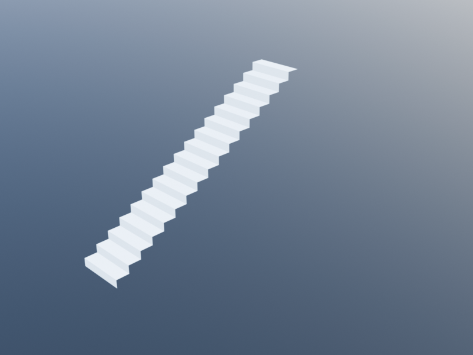
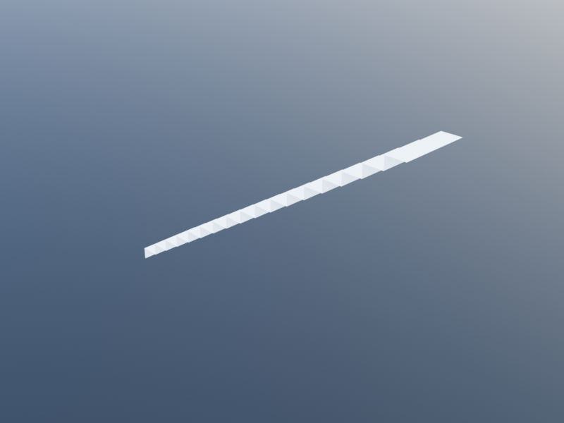
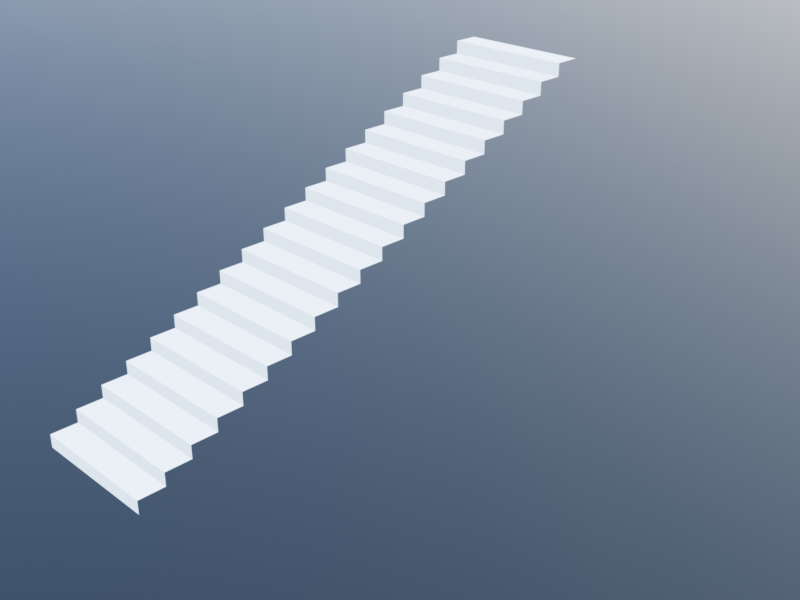
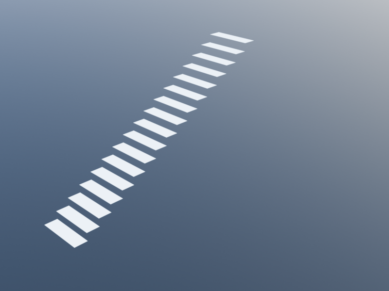
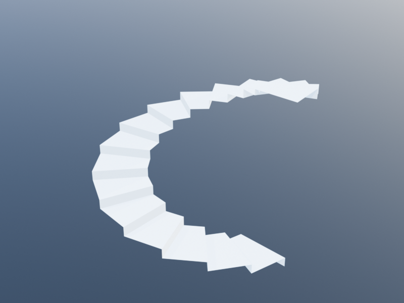
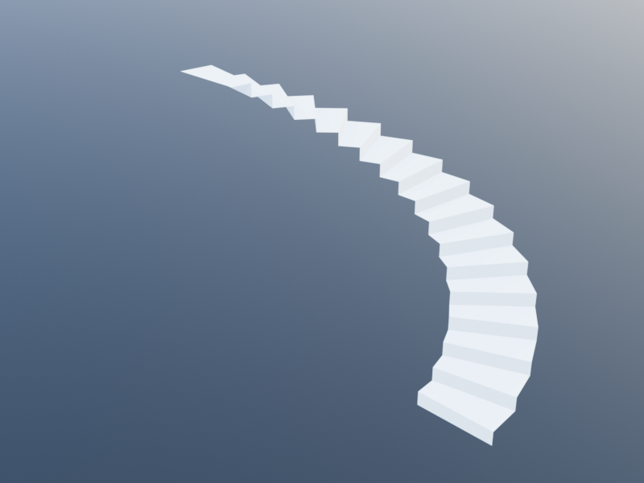

Circulation
Circulation elements enable movement between and within levels. Stairs connect floors vertically, ramps provide accessible slopes, landings create rest platforms, and railings add safety barriers.
Stair
A straight stair generates a flight of steps from a base point, climbing in a given direction between two levels. The number of steps is computed automatically from the level heights and family parameters.
Signature
stair(base_point::Loc=u0(),
direction::Vec=vy(1),
bottom_level::Level=default_level(),
top_level::Level=upper_level(bottom_level),
family::StairFamily=default_stair_family())StairFamily Parameters
| Parameter | Default | Description |
|---|---|---|
width | 1.0 | Stair width |
riser_height | 0.18 | Height of each riser |
tread_depth | 0.28 | Depth of each tread |
thickness | 0.15 | Stringer/slab thickness under treads |
has_risers | true | Whether to generate riser faces |
tread_material | material_concrete | Tread surface material |
riser_material | material_concrete | Riser face material |
stringer_material | material_concrete | Structural support material |
The number of risers is ceil(Int, height / riser_height) where height = top_level.height - bottom_level.height.
Examples
| Up +y (default) | Up +x |
|---|---|
 |  |
| Wider treads | Open-riser |
|---|---|
 |  |
ground = level(0)
first_floor = level(3.0)
# Basic stair climbing in the Y direction
stair(xy(0, 0), vy(1), ground, first_floor)
# Stair climbing in the X direction
stair(xy(0, 5), vx(1), ground, first_floor)
# Wide stair with shallow risers
wide_stair = stair_family(width=1.5, riser_height=0.15, tread_depth=0.30)
stair(xy(0, 0), vy(1), ground, first_floor, wide_stair)
# Open-riser stair
open_stair = stair_family(has_risers=false)
stair(xy(0, 0), vy(1), ground, first_floor, open_stair)Spiral Stair
A spiral stair generates pie-shaped treads arranged around a central column, spiraling from the bottom level to the top level.
Signature
spiral_stair(center::Loc=u0(),
radius::Real=2.0,
start_angle::Real=0,
included_angle::Real=2*pi,
clockwise::Bool=true,
bottom_level::Level=default_level(),
top_level::Level=upper_level(bottom_level),
family::StairFamily=default_stair_family())Parameters
| Parameter | Default | Description |
|---|---|---|
center | u0() | Center point of the spiral |
radius | 2.0 | Outer radius of treads |
start_angle | 0 | Starting angle (radians) |
included_angle | 2*pi | Total rotation angle (radians) |
clockwise | true | Rotation direction |
The family parameter is the same StairFamily used by straight stairs. The width parameter of the family is unused — the tread width is determined by radius.
Examples
| Full-turn spiral | Half-turn spiral |
|---|---|
 |  |
ground = level(0)
first_floor = level(3.0)
# Full-turn spiral stair
spiral_stair(xy(5, 5), 1.5, 0, 2*pi, true, ground, first_floor)
# Half-turn spiral stair, counterclockwise
spiral_stair(xy(5, 5), 2.0, 0, pi, false, ground, first_floor)
# Spiral with custom start angle
spiral_stair(xy(5, 5), 1.8, pi/4, 2*pi, true, ground, first_floor)Stair Landing
A stair landing is a horizontal platform between flights of stairs. It is structurally similar to a slab but uses its own family to distinguish materials and thickness.
Signature
stair_landing(region::Region=rectangular_path(),
level::Level=default_level(),
family::StairLandingFamily=default_stair_landing_family())StairLandingFamily Parameters
| Parameter | Default | Description |
|---|---|---|
thickness | 0.2 | Landing thickness |
top_material | material_concrete | Top surface material |
bottom_material | material_concrete | Bottom surface material |
side_material | material_concrete | Edge material |
Examples
mid_level = level(1.5)
# Rectangular landing between stair flights
stair_landing(rectangular_path(xy(0, 3), 2.5, 1.2), mid_level)
# Custom landing
thin_landing = stair_landing_family(thickness=0.15)
stair_landing(rectangular_path(xy(0, 3), 2.5, 1.2), mid_level, thin_landing)Ramp
A ramp is an inclined surface that provides accessible transitions between levels. It follows a path and slopes uniformly from the bottom level to the top level.
Signature
# Path form
ramp(path::Path=open_polygonal_path([u0(), ux()]),
bottom_level::Level=default_level(),
top_level::Level=upper_level(bottom_level),
family::RampFamily=default_ramp_family())
# Two-point convenience form
ramp(p0::Loc, p1::Loc;
bottom_level::Level=default_level(),
top_level::Level=upper_level(bottom_level),
family::RampFamily=default_ramp_family())RampFamily Parameters
| Parameter | Default | Description |
|---|---|---|
width | 1.2 | Ramp width |
thickness | 0.2 | Structural thickness |
bottom_material | material_concrete | Underside material |
top_material | material_concrete | Walking surface material |
side_material | material_concrete | Edge material |
Examples
ground = level(0)
mezzanine = level(1.5)
# Simple straight ramp
ramp(xy(0, 0), xy(0, 12),
bottom_level=ground, top_level=mezzanine)
# Wider ADA-compliant ramp
accessible_ramp = ramp_family(width=1.5)
ramp(xy(0, 0), xy(0, 18),
bottom_level=ground, top_level=mezzanine,
family=accessible_ramp)
# L-shaped ramp with a turn
ramp(open_polygonal_path([xy(0, 0), xy(0, 6), xy(3, 6)]),
ground, mezzanine)Railing
A railing is a safety barrier along a path. It consists of a swept rail profile and evenly spaced posts. Railings can optionally be attached to a host element (e.g., a stair or slab).
Signature
railing(path::Path=open_polygonal_path([u0(), ux()]),
level::Level=default_level(),
host::Union{BIMShape, Nothing}=nothing,
family::RailingFamily=default_railing_family())RailingFamily Parameters
| Parameter | Default | Description |
|---|---|---|
height | 0.9 | Railing height above path |
post_spacing | 1.0 | Distance between posts |
material | material_metal | Material for rail and posts |
Examples
ground = level(0)
# Railing along a straight edge
railing(open_polygonal_path([xy(0, 0), xy(10, 0)]), ground)
# Railing around a balcony
railing(open_polygonal_path([
xy(0, 6), xy(8, 6), xy(8, 0)]), level(3.0))
# Railing with custom height and spacing
short_rail = railing_family(height=1.1, post_spacing=1.5)
railing(open_polygonal_path([xy(0, 0), xy(10, 0)]),
ground, nothing, short_rail)
# Railing attached to a stair
s = stair(xy(0, 0), vy(1), level(0), level(3.0))
railing(open_polygonal_path([xy(0, 0), xyz(0, 5, 3.0)]),
level(0), s)Complete Stairwell Example
A stairwell with two flights connected by a landing, with railings on both sides:
ground = level(0)
mid_level = level(1.5)
first_floor = level(3.0)
# First flight: ground to mid-landing, going in Y direction
stair(xy(0, 0), vy(1), ground, mid_level)
# Landing platform at mid-level
stair_landing(rectangular_path(xy(-0.25, 4.5), 2.5, 1.5), mid_level)
# Second flight: mid-landing to first floor, going in -Y direction
stair(xy(2.0, 6.0), vy(-1), mid_level, first_floor)
# Railings along both flights (these paths span different Z heights)
railing(open_polygonal_path([xy(0, 0), xyz(0, 4.5, 1.5)]), ground)
railing(open_polygonal_path([xy(2.0, 0), xyz(2.0, 4.5, 1.5)]), ground)
railing(open_polygonal_path([xyz(0, 6.0, 1.5), xyz(0, 1.5, 3.0)]), mid_level)
railing(open_polygonal_path([xyz(2.0, 6.0, 1.5), xyz(2.0, 1.5, 3.0)]), mid_level)
# Landing railings
railing(open_polygonal_path([xy(-0.25, 4.5), xy(-0.25, 6.0)]), mid_level)
railing(open_polygonal_path([xy(2.25, 4.5), xy(2.25, 6.0)]), mid_level)